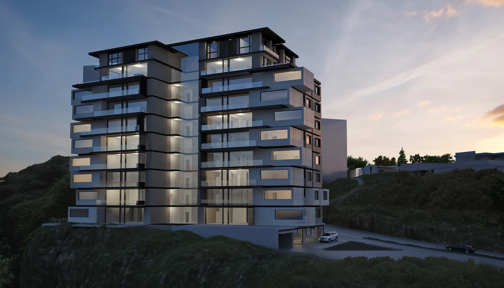
arboro residencial ver el proyectoProyectos
la visión, antes del muro
Todo lo construido empezó aquí: en el trazo. Estos proyectos son la etapa donde la visión toma forma, antes de volverse muros, luz y vida diaria.
Portafolio
once proyectos, once formas de vivir
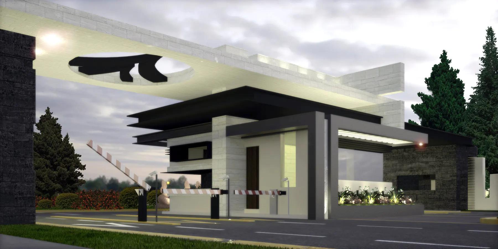
acceso vallescondido ver el proyecto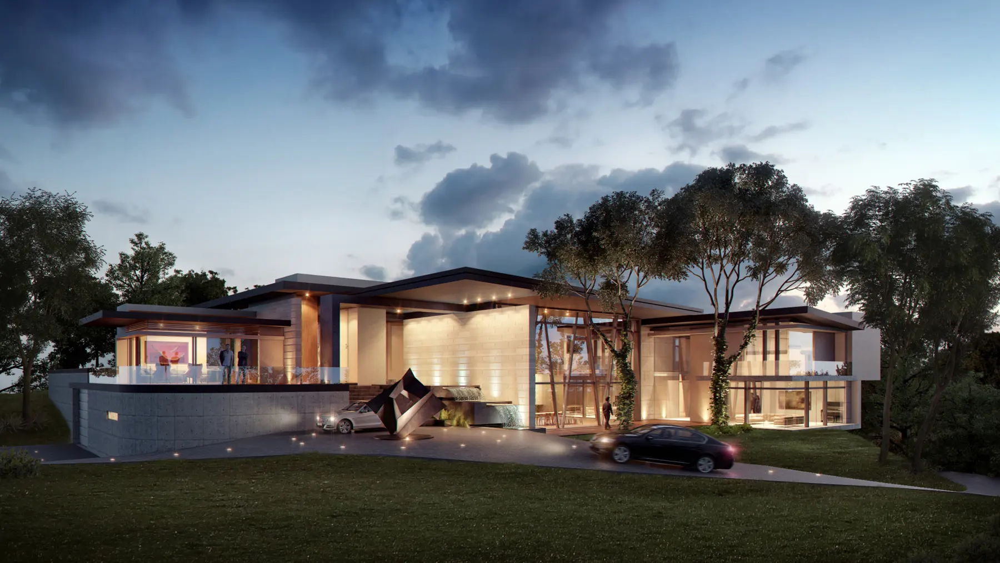
águila real ver el proyecto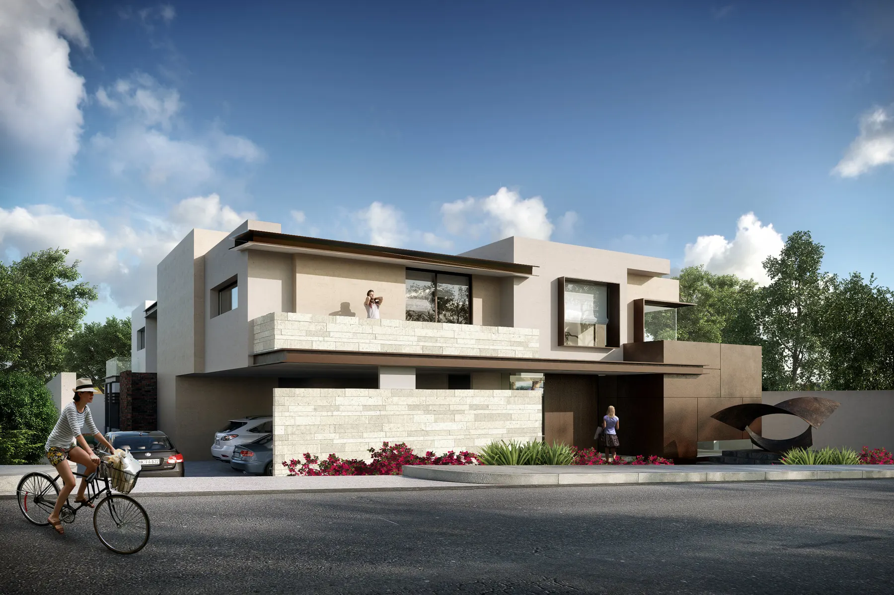
paseo de vallescondido P-004 ver el proyecto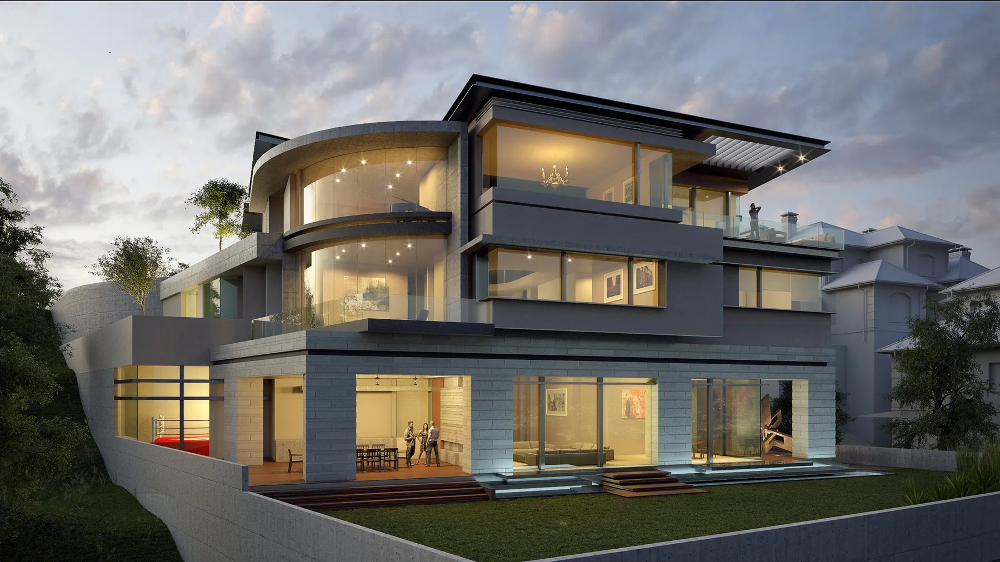
bejar ver el proyecto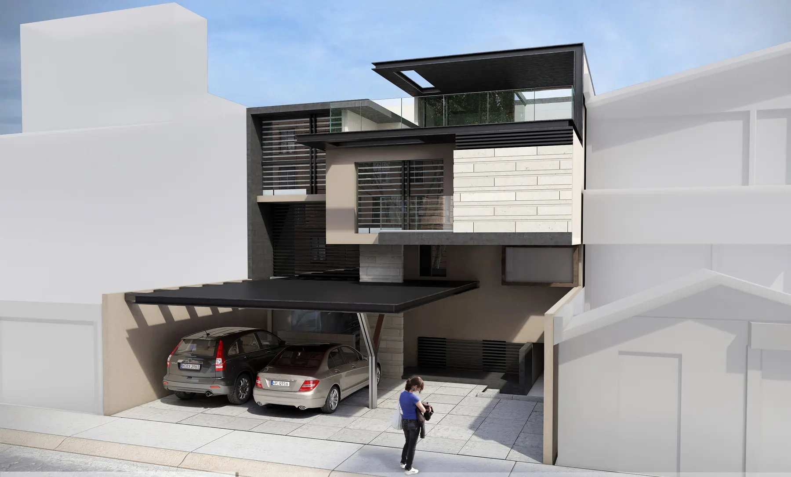
mayoral ver el proyecto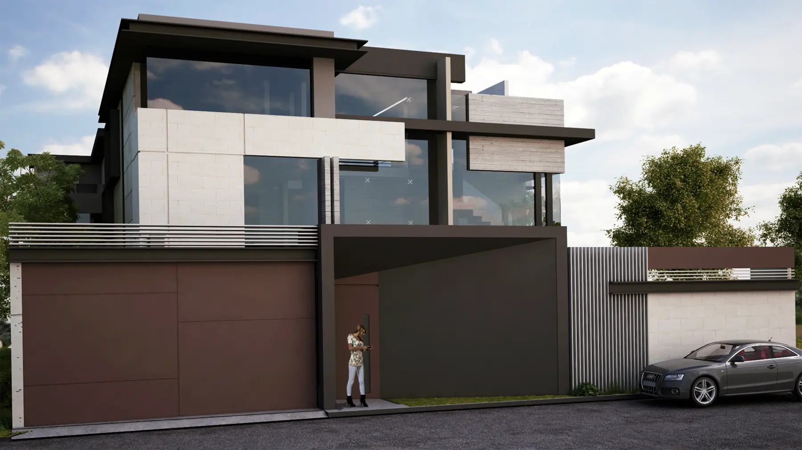
sierra paracaima ver el proyecto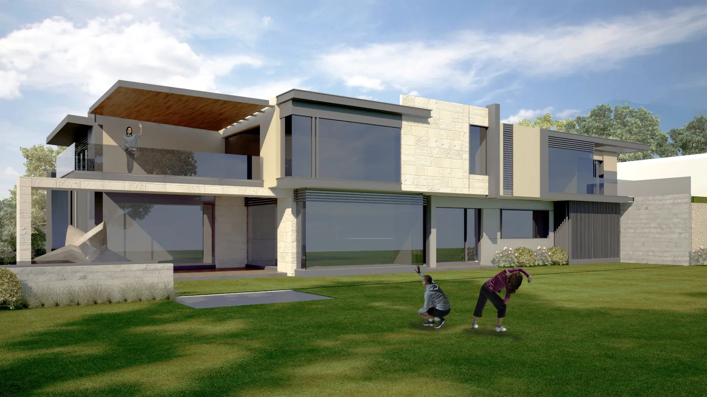
paseo de vallescondido v P-008 ver el proyecto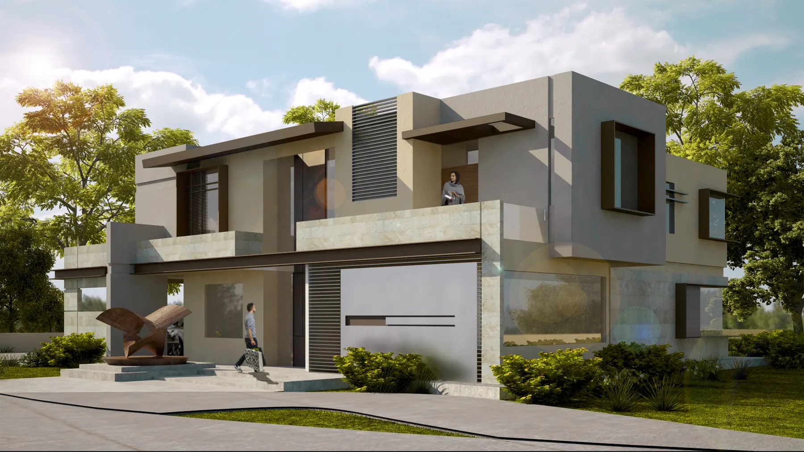
paseos ver el proyecto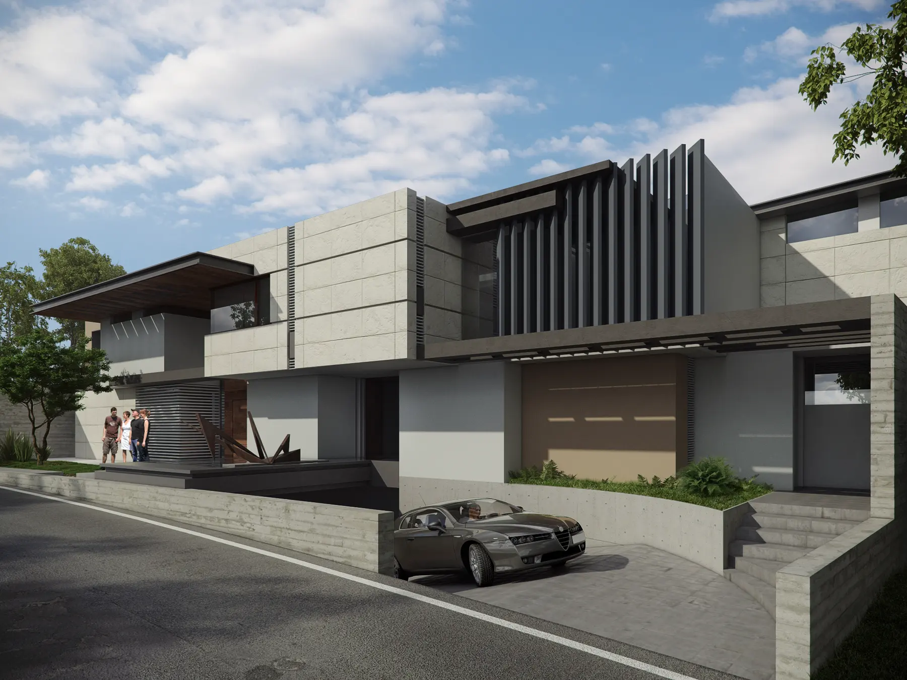
vila sol ver el proyecto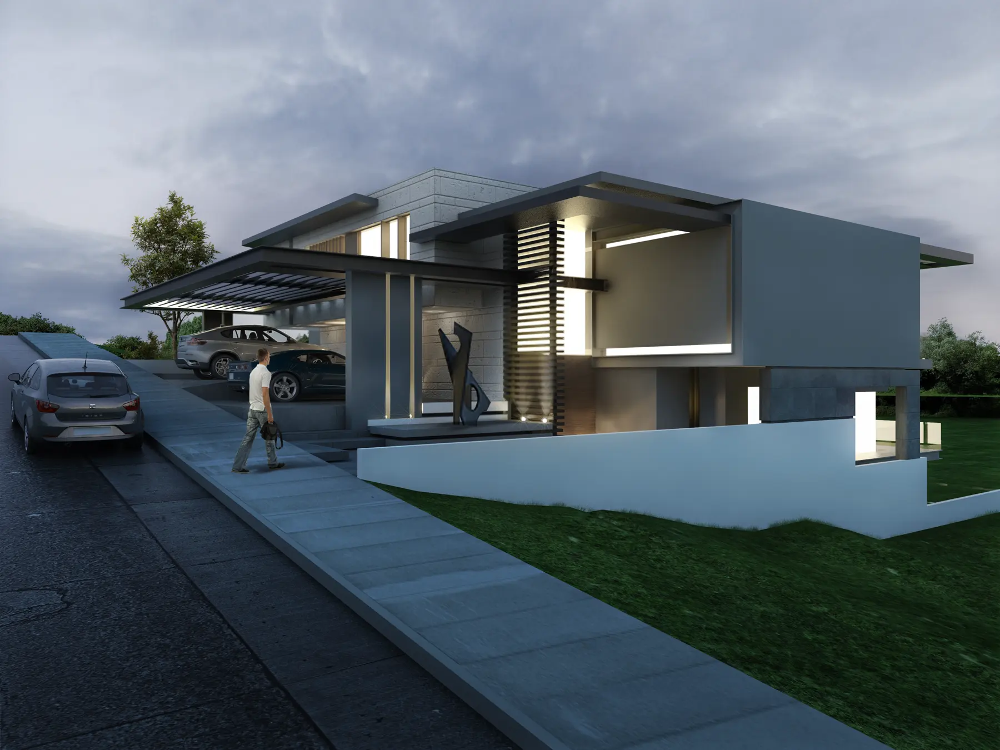
vila punta ver el proyectoel siguiente trazo lleva tu nombre
Cada uno de estos trazos espera su momento. El tuyo puede empezar antes: una conversación basta para saber si es el despacho que buscas.
Agenda una primera conversación